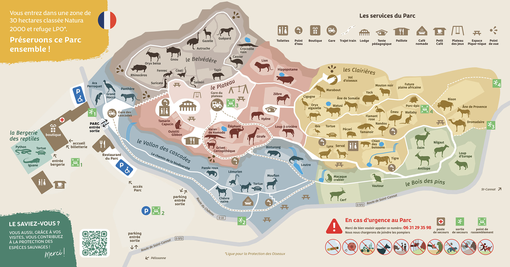

Avant votre visite, consultez le plan du parc pour repérer les différentes zones et attractions. Cela vous permettra de mieux organiser votre parcours et de ne rien manquer des moments forts de Zootopia.
Plan interactif du parc avec toutes les zones d'attractions, restaurants, et espaces de repos.
Toilettes à proximité
Des toilettes sont disponibles à divers endroits dans le parc, notamment près de l'entrée, des restaurants et des attractions principales.
Espaces de repos
Des espaces ombragés et des bancs sont installés dans tout le parc pour permettre aux visiteurs de se reposer entre leurs aventures.
Parking
Le parc dispose de plusieurs parkings gratuits et payants, ainsi qu'un espace réservé pour les personnes à mobilité réduite.
Point de premiers secours
Des postes de premiers secours sont disponibles dans tout le parc en cas d'urgence médicale.
Boutiques
Des boutiques sont situées dans le parc où vous pouvez acheter des souvenirs, des produits dérivés et des articles de première nécessité.
Point d'eau
Des fontaines d'eau potable sont disponibles dans tout le parc pour vous permettre de vous hydrater gratuitement.
Gare à proximité
La gare la plus proche est à 10 minutes en voiture du parc, avec des navettes régulières qui vous emmènent directement à l'entrée.
Trajet de train pour visiter
Un train touristique parcourt le zoo pour vous permettre de visiter les zones principales tout en vous relaxant.